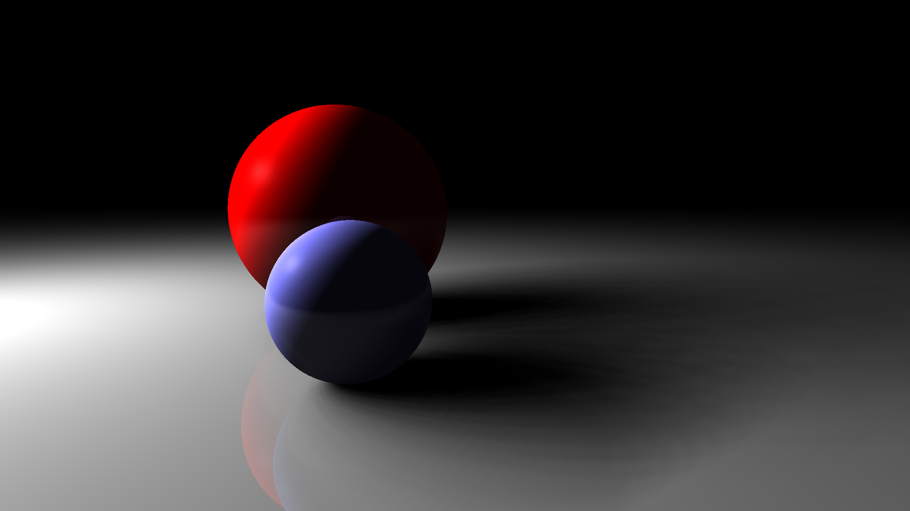
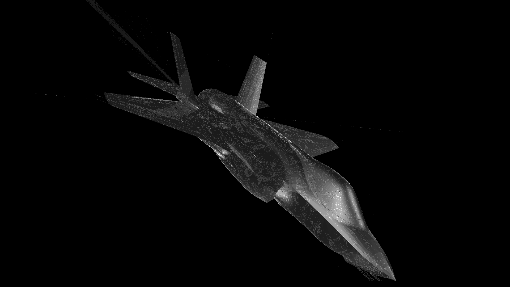
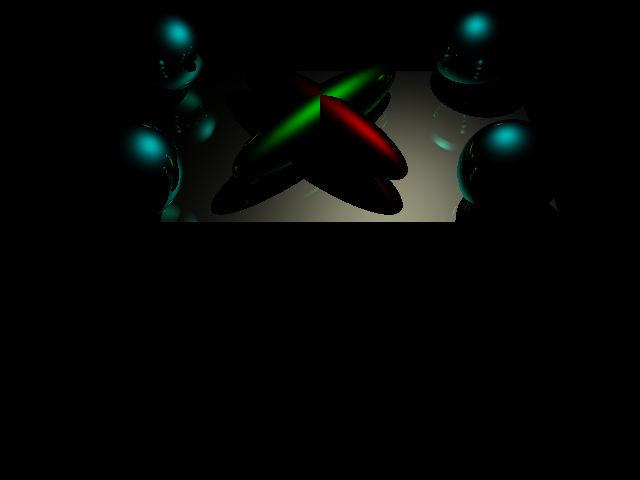
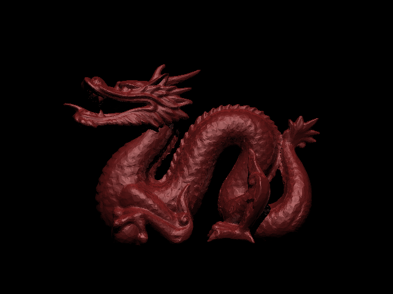
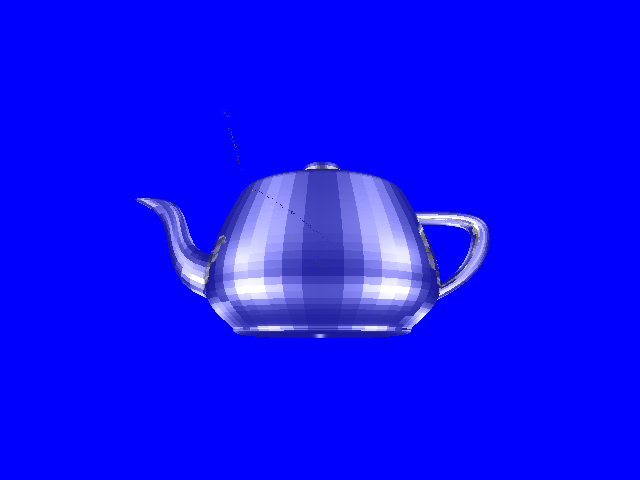
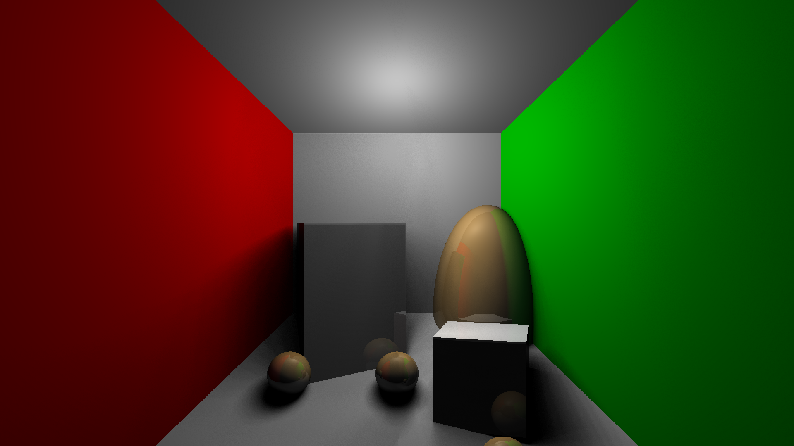
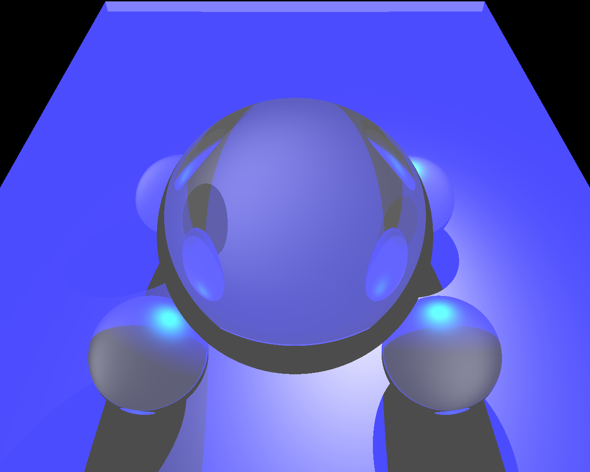
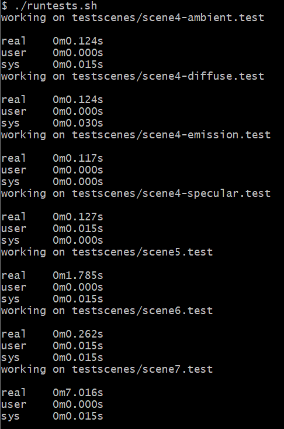

What the project was about
Students were asked to form a group of 1 or 2.
I was part of a group of 2.
Groups were asked to create a raytracer.
The program had to parse a text file that specifies details about the scene to render.
It contains information such as camera properties, transformation stack, and objects (primitives).
The output is an image file.
We also had opportunities to do extra, such as implementation of acceleration structures, softshadows, refractions, and texture mapping.
Our group only had plans to do a few things, which were softshadows and other file (STL) support.
We tried messing around implementing refractions but we noticed our code was not ready for such changes.
Rest of the sections will remain unmodified from the original documentation of the project.
The overview section will go over what we have done. It also contains some images that we've produced.
The acceleration section will discuss the acceleration structure. It documents the implementation and speedup.
The extra credit section will talk about the implementation of our extra credit features in more detail.
Overview
We have implemented all basic feaures required for a raytracer. Parses the given file correctly, produces the image of the scene with parallelization and acceleration structure. Some extra features have been added for the Extra Credit.
Instructions
Open hw4/hw4.sln. Change to Release mode. Click run. Make sure you have input arguments set in the Debug option.
Alternatively, you can run Release/hw4.exe with desired input file or the shell script Release/runtests.sh which will render all scenes located in Release/testscenes/*.test. The shell script ignores all output of the program and will tell you how long the execution time was.
The parameters for area light, specifically sample size and perturbation amount, must be set within the code in main.cpp. You will have to rebuild the program.
Images






This is our rough implementation of refraction.
We assumed that the sphere was filled, with a higher index of refraction.
Inside of the sphere, the program correctly displays an upside down image of the background.

Acceleration Structure
Implementation
We implemented the Octree acceleration structure.
Octree partitions space into 8 rectangular prisms. And each of the children are also partitioned in the same way, depending on how many Primitives are inside.
An OctreeNode consists of 8 referenes to a BoundingBox and list of Primitives.
Primitives that are strictly inside of a particular BoundingBox is part of the child's BoundingBox.
Those that are not strictly inside of any of the child is now part of the parent's list of Primitives.
Intersection between the ray is checked with the root OctreeNode (constructed with all the Primitives of the scene).
We check if the ray hits any of the Primitives that are in the root.
Now, check if the ray hits any of the children's BoudningBox and recurse on those that have been hit.
Improvements
Pared with parallelization, scene7.test went from taking ~20min (~1,200s) to ~7s. About 170 times faster!

Extra Credit
Area Light
We have created an area light source, which can be instantiated with arealight command in the input file.
The area light is given a radius (hence, it's a sphere) and the visibility of the light source is calculated by sampling points around the radius of it's position.
Usage:
arealight x y z r g b r
where (x, y, z) is the position of the area light,
(r, g, b) is the color of the area light, and
r is the radius of the area light.

perturb=0.01f, samples=64

perturb=0.3f, samples=64
Implementation Overview
Each light is randomly sampled from the hit position to determine the visibilty of the pixel.
A set of points is created using the Sunflower Seed algorithm + some perturbation to randomize the points.
This achieves the effect of stratified sampling, rather than complete random sampling (required many sampled points to achieve smooth shadows).
I've included a interactive demonstration of the Sunflower Seed algorithm below.
Note that the above points are in XY coordinate frame.
Using the lights position and hit position (position in which we are trying to sample the light from), we can construct the necessary transformation to take the sample points to the correct position.
Finally, cast rays to each sampled point and see if each sample is visible from the hit position.
In the end, we have visibility = numHit / numSample.
The visibility value is multiplied to the diffuse and specular component.
Note that the sampling method does not treat the light source as a sphere, but rather a disk in space, oriented based on where we are sampling.
This method is obviously not accurate, but I really wanted to implement the Sunflower Seed algorithm.
STL File Support
STL (Standard Triangle Language) files can be parsed. Link to the parser written by my partner.
We created a new triangle type, stltri, which has the form:
stltri nx ny nz v1 v2 v3
where (nx, ny, nz) are the normals,
and (v1, v2, v3) are the vertices.
Notably, stltri does not have an orientation and its face normal is defined by the input.
Showcase
Here are some of the things that our parser and custom triangle type can render.